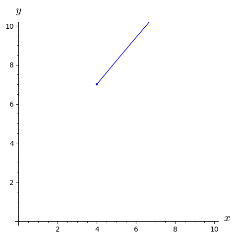

where \(x\) and \(y\) represent the cost per item of two distinct items purchased by two customers and \(26\) and \(20\) their total costs, respectively. The coefficients are the numbers of each item purchased by each customer. The goal is to use information like this to determine the currently unknown to us costs for each item. A helpful visual is to solve for both equations as linear functions of \(y\) and identify where the graphs of the lines intersect.
Without linear algebra we can solve and substitute until we’ve identified all variables, or manipulate entire equations simultaneously. Solving the first equation for \(x\text{,}\) we have
\begin{equation*}
y = \frac{26- 5x}{3}
\end{equation*}
which can be substituted into the second equation to give
which when solved for \(x\) gives \(x = 4\) and substituting this in for \(x\) gives \(y =
2\text{.}\)
Instead, if we multiply the second equation by \(\frac{1}{2}\text{,}\) we get \(\frac{1}{2}(2x+6y)
=\frac{1}{2}(20)\) which is \(x+3y = 10\text{.}\) Subtract that from both sides of the first equation,
Notice this completely eliminates the \(y\)-variable and we have \(x = 4\) as the solution. Substituting this back in to each original equation for \(x\) we find \(y = 2\text{.}\) Alternatively we could have multiplied the second equation by \(\frac{5}{2}\) and used that to eliminate \(y\) and solve for \(x\text{.}\)
We take the numbers in the first row, rotate 90 degrees, align with the \(x\) and \(y\text{,}\) multiply and add, in order to get back the entry of the first row on the right-hand side, here \(26\text{.}\) Above when dealing with scalar variables like \(x\) and \(y\) whose coefficients were scalars, we could eliminate multiplication with division. For example, to solve \(4x = 16\) we divide each size by \(4\) or multiply each side by the multiplicative inverse of \(4\text{,}\) it’s reciprocal \(\frac{1}{4}\text{.}\)
where \(A\) is the matrix above, \(\vec{x}\) is the vector with entries \(x\) and \(y\text{,}\) and \(\vec{b}\) is the vector with entries \(26\) and \(20\text{.}\)
With matrices, we can’t "divide" but we can multiply my multiplicative inverses. So we need to define the inverse of a matrix, this is
\begin{equation*}
\begin{pmatrix}
a \amp b\\
c \amp d
\end{pmatrix}^{-1} =
\frac{1}{ad-bc}
\begin{pmatrix}
d \amp -b\\
-b \amp a
\end{pmatrix}.
\end{equation*}
The quantity in the denominator in front of the matrix is called the determinant, \(\operatorname{det}(A) = ad-bc\text{.}\) Under conditions where \(\operatorname{det}(A)=0\text{,}\) we are unable to invert the matrix (a big part of linear algebra is identifying conditions under which we can and cannot invert matrices).
The left, for reasons we can confirm later, is simply \(\begin{pmatrix}
x\\y
\end{pmatrix}\text{,}\) while on the right we have to calculate the result of matrix-vector multiplication,
There are other important matrix properties that have and will show up, primarily the eigensystem - the paired collection of eigenvalues and eigenvectors. To find eigenvectors we are looking for the following
in other words, we are looking for a special number \(\lambda\) that has the same effect on the entries of the vector as does the more complicated matrix-vector multiplication. We need to find a number \(\lambda\) such that
But this is tricky since \(A\) is a matrix, \(\lambda\) is a number, and \(\vec{x}\) is a vector. To make the matrix and number more compatible we can write this as \((A - \lambda I)\vec{x} = 0\text{,}\) where \(I\) is the \(2\times2\)identity matrix introduced not long ago, with \(1\)’s on the main diagonal only and zeros elsewhere. It would be easy to solve the equation if the entries in \(\vec{x}\) were all zeros, but that isn’t interesting. Instead we will solve \(\operatorname{det}(A-\lambda I) =0\) for \(\lambda\text{.}\) Returning to the general case (with entries \(a, b, \dots\)), we have to find the determinant of
\begin{equation*}
A-\lambda I = \begin{pmatrix}
a -
\lambda \amp b\\c \amp d - \lambda \end{pmatrix},
\end{equation*}
then set it to zero and solve for the necessary \(\lambda\) values.
The determinant is \(\operatorname{det}(A-\lambda I) =
(a-\lambda)(d-\lambda)-bc\text{.}\) Conveniently this can be written directly in terms of two important matrix properties, the trace and the determinant. We’ve already introduced the determinant, \(\Delta =
\operatorname{det}(A)\text{,}\) and the trace, \(\tau =
\operatorname{tr}(A)\text{,}\) is just the sum of the entries along the main diagonal.
\begin{align*}
\end{align*}
This means our eigenvalue problem just requires us to solve the quadratic formula for a quadratic equations whose coefficients can be quickly collected from the entries of the original matrix.
For a concrete example, use the matrix \(A\text{,}\) we’ve introduced earlier. For this, \(\operatorname{tr}(A) = 11\) and \(\operatorname{det}(A) = 24\text{.}\) The equation for the eigenvalues is
it’s important to watch out for the sign of the discriminant\((-11)^2 - 4(1)(24)\text{,}\) which, if negative, would cause complex-valued solutions.
Now that we have eigenvalues, we have to find the paired eigenvector for each, this sort of takes us back to the original ideas from this document, we need to find the vector for which \((A-\lambda I)\vec{u} = 0\text{.}\) Or, for \(\lambda_1 = 8\text{,}\)
This is a rather strange one, you might notice that this is solved by \(u_2 = u_1\) - we can choose the values \(u_1 = u_2 = 1\text{.}\) A somewhat peculiar feature of eigenvectors, is that we are often only concerned with the direction. The eigenvector is an arrow that points from \((0, 0)\) to, in this case, \((1, 1)\text{.}\)
These equations are repeated and give rise to \(u_2 = (-\frac{2}{3})u_1\text{.}\) If we pick \(u_1 = 1\) for convenience, we have \(u_2 = -\frac{2}{3}\text{.}\) This eigenvector is an arrow that points from \((0, 0)\) to \((1,
-\frac{2}{3})\text{.}\)
What should be the case for each is that \(A\vec{u} = \lambda \vec{u}\text{.}\) Verify that this is the case for the second pairing, using this example of the first to get started. First,
Notice that multiplying the vector by the matrix and by the scalar eigenvalue give rise to the same result. Effectively, we have "replaced" the more difficult process of matrix-vector multiplication by the simpler process of scalar-vector multiplication.
ExampleA.1.1.
Using the standard distance formula, calculate the length of the first eigenvector. This represents the distance between the points \((0,0)\) and \((1, 1)\) in the plane. Then divide the entries of the vector by this amount and repeat the distance calculation.
While this is often useful, for our purposes, we can "absorb" the length of the vector into other constants that need to be calculated in the context of solving a problem.
Sometimes we need to normalize the eigenvector or control its length, we aren’t concerned with that here. Additionally, for the first we could have just as easily chosen \(u_1 =
u_2 = -1\) which would be a vector pointing in the opposite direction of what we’d first considered. Surprisingly, for most of our needs this doesn’t really matter - what matters most is the angle the vector points towards (in this case still along the line \(y = x\)).
To go back to how we started using matrices, Jacobian matrices of nonlinear systems and systems of linear differential equations, consider the coupled linear system of differential equations,
Since we have yet to use these numbers, let’s pick \(x_0 = 4\) and \(y_0 = 7\text{.}\) To get started let’s express this initial condition as a >linear combination of eigenvectors. This means we want to write
Interestingly, the same techniques for solving linear systems from earlier apply - solve and substitute, add or subtract multiples of equations, or even rewrite this as a matrix-vector equation and invert. Skipping those steps for now, \(c_1 = \frac{29}{5}\) and \(c_2 = -\frac{9}{5}\text{.}\) This means that the solution corresponding to this initial condition is
Here is one solution to the linear system of differential equations above. It may not quite look so, but this is a slight curve traced out by coordinates of the form
for \(t\geq 0\text{,}\) starting from \((x(0), y(0)) = (4, 7)\text{.}\)

FigureA.1.2.Solution to a linear system of differential equations.
A couple interesting ideas, not shown yet, are that if initial conditions are multiples of the coordinates of a single eigenvalue, those are straight lines in the phase plane. Depending on which eigenvector is present, one of \(c_1\) or \(c_2\) will be zero. For example, if \(x_0 = y_0 = 4\text{,}\) then \(c_1 = 4\) and \(c_2 = 0\text{.}\) The solution will have no contribution from the second eigenpair and will instead be